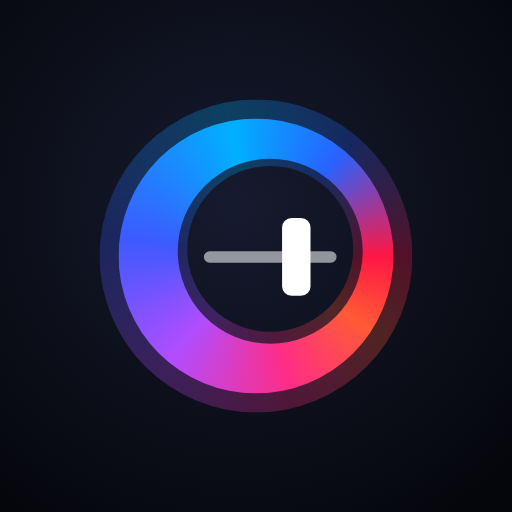
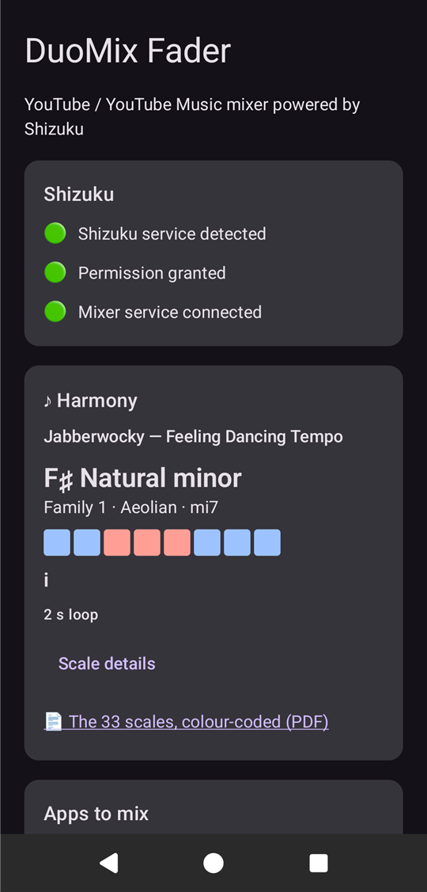
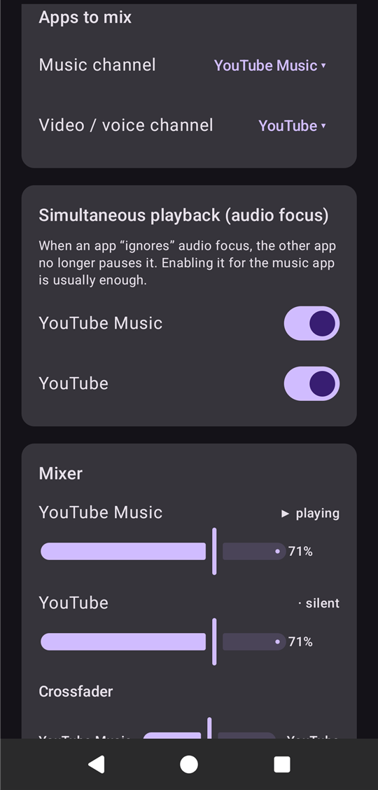
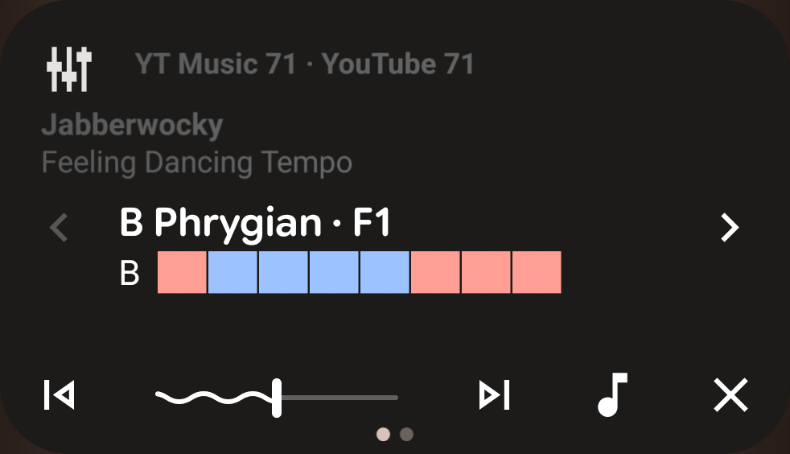
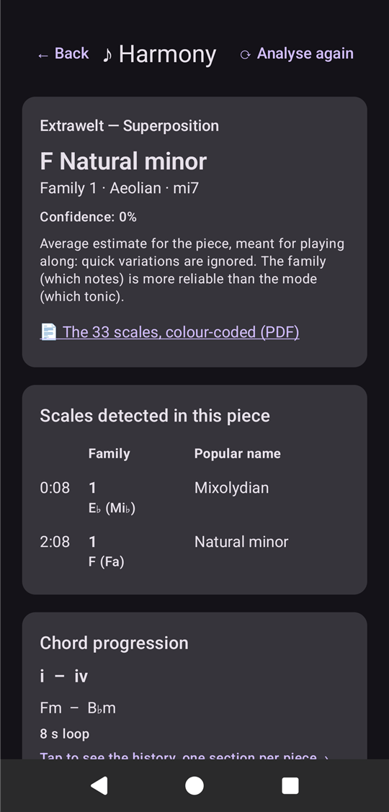
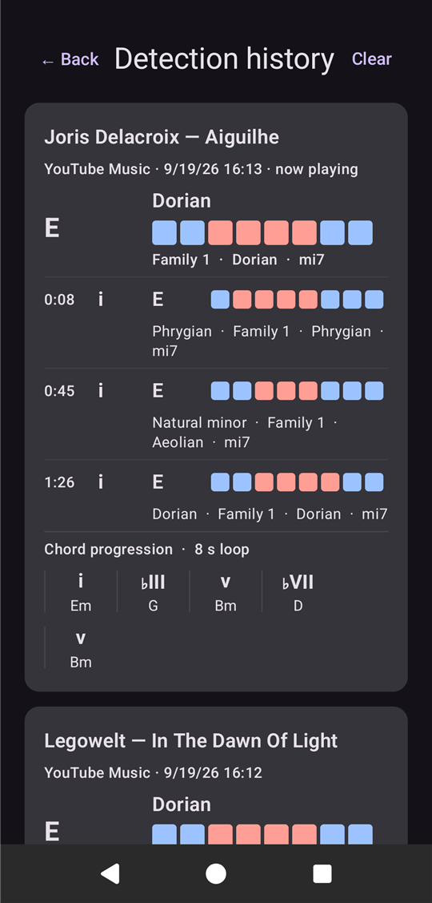
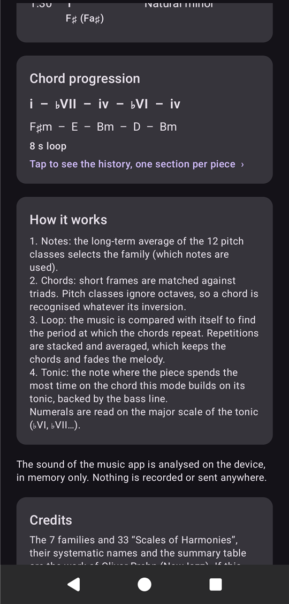
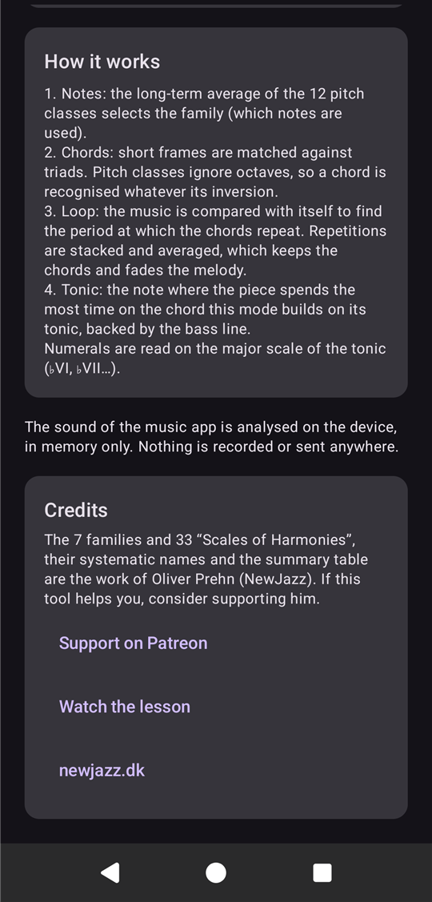
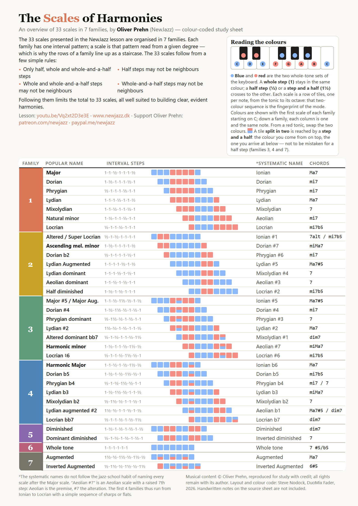

Play two apps at once, mix them with a crossfader — and see, while the music plays, which scale it is in and which chords it loops through.
Android normally lets one app play at a time: start a video and your music pauses. DuoMix Fader removes that limit for two apps you choose — a music app and a video or voice app — and gives you a two-channel mixer with a DJ-style, constant-power crossfader. It needs no root.
On top of the mixer, the Harmony feature listens to the music channel and estimates the scale of the piece among the 7 families and 33 Scales of Harmonies described by Oliver Prehn (NewJazz), its tonic, and its chord progression in Roman numerals. It is an accompaniment aid: a steady, averaged reading of the piece, not a note-by-note transcription.

DuoMix Fader relies on Shizuku, a separate free app that lets it perform a few system-level audio operations without root.
The app follows your phone's language — English, French or Spanish. You can also choose its language alone in Settings → System → Languages → App languages. Scale names are international musical terms and are never translated.

Pick one app per channel. Only supported apps that are installed are listed: for music, YouTube Music, Spotify, Deezer, Apple Music, Amazon Music, SoundCloud, Tidal, Qobuz — and YouTube, X and Telegram, since music is also played from videos and feeds (Harmony listens to the music channel); for video and voice, YouTube, X, Telegram, Twitch, VLC, Netflix, Pocket Casts, Chrome, Firefox. An app can hold only one channel: pick it on a channel while the other one has it, and the two channels swap. The list is closed on purpose: the privileged service refuses any other app.
Android pauses an app when another one takes the audio focus. Turn the switch on for an app and it stops being paused by the other. Enabling it for the music app is usually enough.
Each slider sets the volume of one app only. The crossfader moves from the music app (left) to the video app (right) following an equal-power curve: at the centre both sit at 71 %, so the overall loudness stays constant.
When you close both the screen and the notification, both apps get their full volume back, and switching a channel to another app restores the app you leave.
You do not have to keep the app open. While DuoMix Fader runs, a media-player card called DuoMix fader appears next to your other players — in the notification shade and on the lock screen.

The card, cropped from the notification shade. Here: G natural minor, family 1 — G A in red, B♭ C D in blue, E♭ F G in red — a few seconds into a piece, when the progression is still a single chord. The name of the audio output is masked.
| On the card | What it shows or does |
|---|---|
| Title | The essential: the mode. Tonic, popular name and family — “E Mixolydian · F1”. |
| Colour tiles | The key, in letter notation — “A”, “D♭” — then one tile per note of the scale, from the tonic to its octave. Blue and red are the two whole-tone sets of the keyboard, so a change of colour means a half step or a step and a half. A minor reads R R B B B R R R. This sequence is the fingerprint of the mode. A tile split in two is reached by a step and a half (families 3, 4 and 7): the colour you come from on top, the one you arrive at below. |
| Chord progression | Under the tiles, in Roman numerals relative to the tonic: “i – ♭VI – iv – ♭VI 8 s” when a loop was found, with its length; “… i – iv – ♭VII” — the last chords heard — when none was. It only changes once a new progression has held for four seconds. |
| Small text, top | To the right of the app icon, the two apps and their volumes: “YT Music 71 · YouTube 71”. Beneath, on two lines, the artist and the title of the piece; a long title is cut short. This text is drawn in the card's background artwork, which Android darkens. |
| Progress bar | It is the crossfader: drag it. Left is the music app, right is the video app. To re-centre, drag it to the middle. |
| ⏮ / ⏭ | Move the fader 10 % towards music / towards video. |
| ♪ | Close the shade and open the Harmony panel. |
| ✕ | Hide the card. It comes back the next time you open the app. |
Long-press an empty spot of your home screen, choose Widgets, then DuoMix · Detection history. It shows the pieces you listened to — the one playing first — each with its key, its scale and colour tiles, the scales held in turn with their degree, and the chord progression. Scroll the list; tap it to open the history in the app. It is updated only when its content changes, never on a timer, and it is not offered on the lock screen: the player card is there for that.

Open it from the ♪ Harmony card of the main screen (Scale details) or from the ♪ button of the notification. Analysis starts by itself as soon as the music app plays.
Degrees are read on the major scale of the tonic, with ♭ or ♯ for other pitches: in A minor, F major is written ♭VI. Upper case is major (+ for augmented), lower case is minor (° for diminished).
The ⟳ button forgets everything and analyses the current piece afresh — useful if you started listening in the middle of an unusual passage.
Under the scale, the line Source offers two buttons. You can switch at any time; the analysis, the history, the widget and the notification card follow whichever source is active.
| Source | What it hears |
|---|---|
| App sound | The sound of the music app only, taken inside the phone: it works with headphones, and the other channel never enters the analysis. On recent versions of Android the privileged service captures it. On Android 12 it cannot, so DuoMix Fader uses Android's own playback capture instead: the first time, Android asks for the recording permission — it is used only to read the music app's sound, the screen is never captured — and may show a cast icon in the status bar while it runs. |
| 🎙 Microphone | What the phone hears: its own speaker, a stereo in the room, an instrument you play. It hears nothing of a headphone session. Tap it once to start (Android asks for the microphone permission the first time), tap it again to stop. It is never switched on by itself. |

Tap the Chord progression card of the Harmony panel to open the history. The piece being played comes first, marked now playing; earlier pieces follow, most recent first, up to fifty.
Each section reads in three levels, separated by thin lines:
Pieces are told apart by the title and artist that the music app announces itself — the same information your lock screen shows. Nothing is recognised by listening and nothing is looked up online. When an app announces no title, a silence of a few seconds marks the boundary and the section is called Unknown piece.
Clear empties the list. The history is a private file of the app; it contains names of pieces, scales and chords, never any sound.


The link 📄 The 33 scales, colour-coded (PDF), in the Harmony card and in the panel, opens a one-page study sheet inside the app. Pinch to zoom, drag to move around. It exists in English, French and Spanish and follows the app's language.

The sheet reproduces the data of Oliver Prehn's overview — 33 scales in 7 families, with popular name, interval steps, systematic name and chords — and adds a colour code:
The full method, its constants and what did not work are described in the research note shipped with the source code, docs/research/harmony-analysis.md.
DuoMix Fader acts through the rights that Android gives to its shell identity, and those rights are not the same on every version or brand. The app checks what your phone allows when it starts, switches off what it cannot do, and says so on the screen. It installs from Android 12.
| Recent Android tested: Pixel 11 Pro XL, Android 17 | Android 12 tested: OnePlus 7 Pro, emulator | |
|---|---|---|
| Two apps playing at once | Yes | Yes |
| Per-app volume, smooth crossfade | Yes | No — switch mode instead |
| Harmony on the app's sound | Yes, by the privileged service | Yes, by Android's playback capture |
| Harmony by the microphone | Yes | Yes |
| Notification | A media-player card: fader, buttons, scale, tiles, progression | An ordinary notification drawn by the app (see below) |
Android 12 does not let the shell reach the players of other apps, so their volume cannot be set. The shell can still switch an app's sound off and on. The fader then becomes a three-way switch — music alone on the left, both in the middle, video alone on the right — and each channel slider mutes its app below 40 %. The mixer card says Switch mode and shows each channel as on or muted. Whatever was muted gets its sound back when DuoMix Fader stops, and again the next time it starts, should it ever be killed in between.
The media-player card of Android 12 cannot show a scale: its text line lets only two tiles through, and it shrinks the artwork to a small square. There, DuoMix Fader posts an ordinary notification instead, outside the media area. Collapsed, it shows the key and the eight tiles in a row. Expanded, it adds the name of the mode, the chord progression, the piece, and the fader as three buttons — music app, Both, video app, the current one outlined — next to ♪ and ✕.
These brands remove some rights from adb — and therefore from Shizuku — until you turn on Disable permission monitoring in Developer options, then restart Shizuku. Without it Shizuku warns that “the permission of adb is limited” and DuoMix Fader cannot work; the app reminds you of the option. It lifts a protection that these brands add on top of Android for a computer connected in debugging mode, and gives adb back the behaviour it has on other phones: decide for yourself whether that suits the phone you use.
The 7 families and 33 Scales of Harmonies, their systematic names and the overview table are the work of Oliver Prehn (NewJazz). If this tool helps you, please support him.
His material is not covered by the app's open-source licence and all rights remain with him. The detection method, the app, the colour code and this guide are by Steve Nodock, with Claude (Anthropic) for algorithms and implementation; they are released under the Apache License 2.0. Shizuku is by RikkaApps.